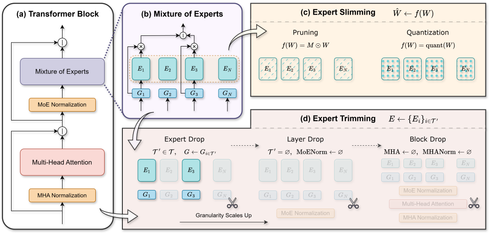

The first principled taxonomy and unified empirical study systematically evaluating Expert Slimming (intra-expert weight pruning and quantization) alongside Expert Trimming (macro-structural module dropping) on production-scale MoEs.

Figure 1: Overview of the Unified MoE Compression Framework dividing the design space into Expert Slimming (intra-expert weight pruning and quantization) and Expert Trimming (structural router-, layer-, and block-level elimination).
While Mixture-of-Experts architectures scale model capacity without quadratic compute growth, they introduce crippling parameter memory footprints and inter-GPU communication bottlenecks during distributed serving.
Combining structural Expert Drop with 4-bit AWQ quantization compounds throughput gains without custom sparsity runtime dependencies.
Compresses Mixtral-8x7B parameter footprint from 93.4 GB down to ~20.1 GB, allowing deployment on consumer GPUs (e.g. RTX 4090 / A10G).
Structural Expert Trimming directly reduces expert parallelism cross-node token dispatch traffic, lifting distributed serving bottlenecks.
Structural Expert/Layer/Block Trimming runs seamlessly on standard dense GEMM kernels with zero specialized software or sparse hardware requirements.
Individual expert matrices exhibit substantial weight-level redundancy. Applying 4-bit Post-Training Quantization (AWQ/GPTQ) achieves near-lossless accuracy while cutting memory by ~75%.
Rather than fine-grained weights, macro components (infrequently routed experts, redundant layers, or entire Transformer blocks) can be eliminated entirely, yielding immediate hardware speedups.
By orchestrating Structural Trimming → 4-bit Quantization → Lightweight Post-Finetuning, practitioners attain the optimal Pareto trade-off between model reasoning and serving latency.
Explore the multi-dimensional landscape of compression methods spanning intra-expert weight modifications, structural drops, and compound recipes.
Prunes fine-grained individual weight elements inside each expert matrix according to weight magnitude or input-activation-weighted saliency scores (W · X).
Quantizes full-precision expert parameters to INT4/FP4 representations. Activation-aware Weight Quantization (AWQ) protects top 1% salient weights to prevent perplexity spikes.
Explore empirical efficiency across downstream tasks, memory footprints, and multi-GPU communication overheads.
Bubble size indicates relative inference speedup (larger = faster generation throughput).
Comparing token dispatch traffic (GB/s) & network latency across Expert Parallel (EP) ranks.
Zero-shot and few-shot evaluation across MMLU, GSM8K, ARC-Challenge, WinoGrande, and HellaSwag.
Select your base architecture, configure intra-expert slimming & structural trimming parameters, and instantly compute memory savings, throughput gain, and ready-to-run CLI commands.
bash scripts/compression/expert_drop/mixtral_expert_drop.sh --model_path mistralai/Mixtral-8x7B-v0.1 --preserve_n 8 --save_path ./compressed_models/mixtral_base
Systematic evaluation across MMLU, GSM8K, ARC-c, WinoGrande, HellaSwag, downstream retention, and memory footprint.
| Model & Recipe | Type | Precision | VRAM (GB) | Throughput | MMLU (5-shot) | GSM8K (8-shot) | ARC-c (25-shot) | Avg Ret. (%) |
|---|---|---|---|---|---|---|---|---|
| Mixtral-8x7B (FP16 Baseline) | Uncompressed | FP16 | 93.4 | 1.00x | 70.60 | 58.40 | 66.80 | 100.0% |
| Mixtral-8x7B + AWQ-4bit | Slimming | W4A16 | 26.8 | 2.10x | 69.80 | 56.20 | 65.40 | 98.8% |
| Mixtral-8x7B + GPTQ-4bit | Slimming | W4A16 | 26.8 | 2.05x | 69.30 | 55.80 | 65.10 | 98.1% |
| Mixtral-8x7B + SmoothQuant-INT8 | Slimming | W8A8 | 48.2 | 1.65x | 70.20 | 57.90 | 66.30 | 99.4% |
| Mixtral-8x7B + Expert Drop (6/8 Exp) | Trimming | FP16 | 72.1 | 1.28x | 68.90 | 54.30 | 64.20 | 97.5% |
| Mixtral-8x7B + Expert Drop (4/8 Exp) | Trimming | FP16 | 50.8 | 1.62x | 64.50 | 48.10 | 60.10 | 91.3% |
| Mixtral + AWQ-4b + ExpDrop(6/8) + LoRA | Unified Pareto | W4A16 | 20.7 | 2.45x | 69.40 | 55.70 | 65.20 | 98.3% |
| DeepSeek-MoE-16B (FP16 Baseline) | Uncompressed | FP16 | 32.8 | 1.00x | 49.30 | 18.80 | 51.20 | 100.0% |
| DeepSeek-MoE-16B + AWQ-4bit | Slimming | W4A16 | 9.4 | 2.25x | 48.60 | 17.90 | 50.30 | 98.5% |
| DeepSeek-MoE + Exp Drop (48/64) | Trimming | FP16 | 25.1 | 1.34x | 47.80 | 17.10 | 49.40 | 96.9% |
| DeepSeek + AWQ-4b + ExpDrop(48/64) + LoRA | Unified Pareto | W4A16 | 7.2 | 2.68x | 48.40 | 17.80 | 50.10 | 98.1% |
End-to-end execution pipelines for structural trimming, intra-expert slimming, lightweight recovery finetuning, and LM-Evaluation-Harness benchmarking.
# 1. Clone the repository
git clone https://github.com/case-lab-umd/Unified-MoE-Compression.git
cd Unified-MoE-Compression
# 2. Create and activate a conda environment
conda create -n moe-compress python=3.10 -y
conda activate moe-compress
# 3. Install core dependencies
pip install -r requirements.txt
# 4. (Optional) Install Flash-Attention 2 for accelerated training & evaluation
pip install flash-attn --no-build-isolation# Structural Expert Drop on Mixtral-8x7B (Retain top-6 out of 8 experts per layer)
bash scripts/compression/expert_drop/mixtral_expert_drop.sh --model_path mistralai/Mixtral-8x7B-v0.1 --preserve_n 6 --save_path ./compressed_models/mixtral_expert_drop_6
# Layer Dropping (Prune 4 non-critical MoE layers based on router entropy)
bash scripts/compression/layer_drop/mixtral_layer_drop.sh --model_path mistralai/Mixtral-8x7B-v0.1 --drop_layers 4 --save_path ./compressed_models/mixtral_layer_drop_4# 4-bit AWQ Quantization (W4A16 with activation-aware scaling)
python -m src.compression.quantize_awq --model_path ./compressed_models/mixtral_expert_drop_6 --w_bit 4 --q_group_size 128 --save_path ./compressed_models/mixtral_exp6_awq4bit
# 50% Wanda Structured Intra-Expert Pruning
python -m src.compression.prune_wanda --model_path mistralai/Mixtral-8x7B-v0.1 --sparsity_ratio 0.5 --save_path ./compressed_models/mixtral_wanda_50# Recovery Finetuning with LoRA (250 steps on UltraChat / SlimPajama)
deepspeed --num_gpus=8 scripts/finetuning/run_moe_finetune.py --model_path ./compressed_models/mixtral_exp6_awq4bit --dataset_name HuggingFaceH4/ultrachat_200k --lora_r 64 --lora_alpha 128 --max_steps 250 --learning_rate 2e-5 --deepspeed_config configs/zero3_moe.json --output_dir ./checkpoints/mixtral_recovered# Run LM-Eval Harness on compressed checkpoint across all benchmark tasks
lm_eval --model hf --model_args pretrained=./compressed_models/mixtral_exp6_awq4bit --tasks mmlu,gsm8k,arc_challenge,winogrande,hellaswag --batch_size 16 --device cuda:0 --output_path ./eval_results/mixtral_unified_recipe.jsonIf you use this unified MoE compression benchmark, code, or findings in your research, please cite our TMLR paper:
@article{he2025towards,
title = {Towards Efficient Mixture of Experts: A Holistic Study of Compression Techniques},
author = {Shwai He and Daize Dong and Liang Ding and Ang Li},
journal = {Transactions on Machine Learning Research (TMLR)},
year = {2025},
url = {https://openreview.net/forum?id=HTpMOl6xSI},
note = {arXiv:2406.02500}
}